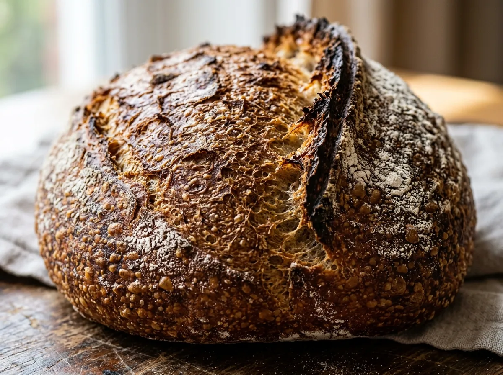
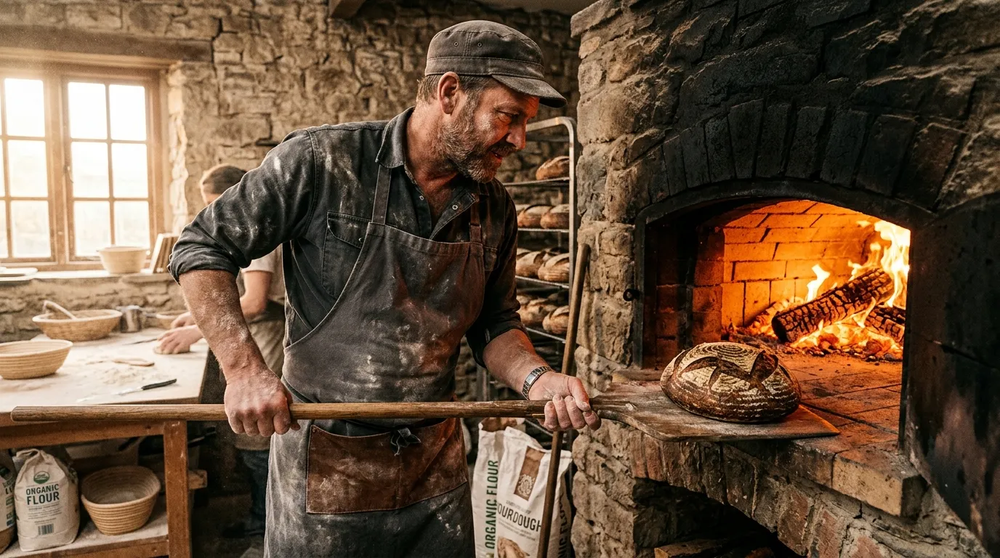
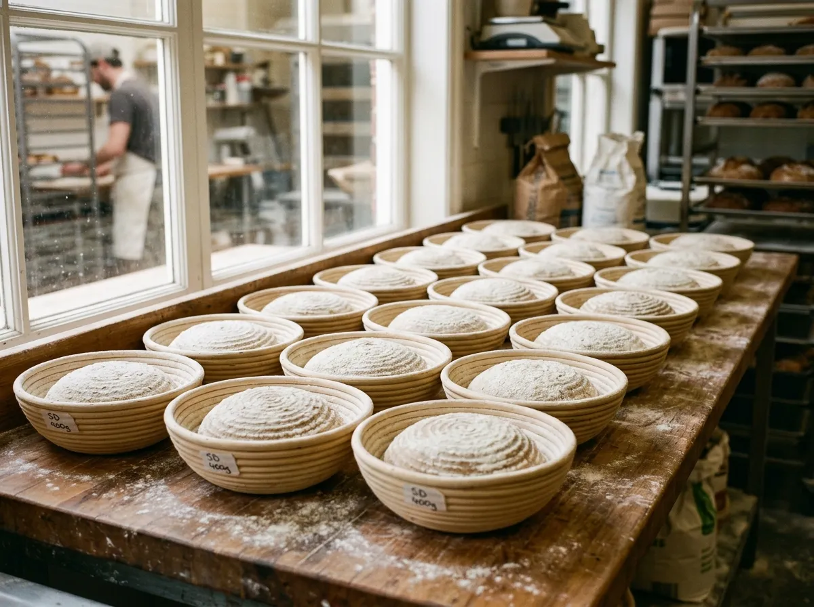
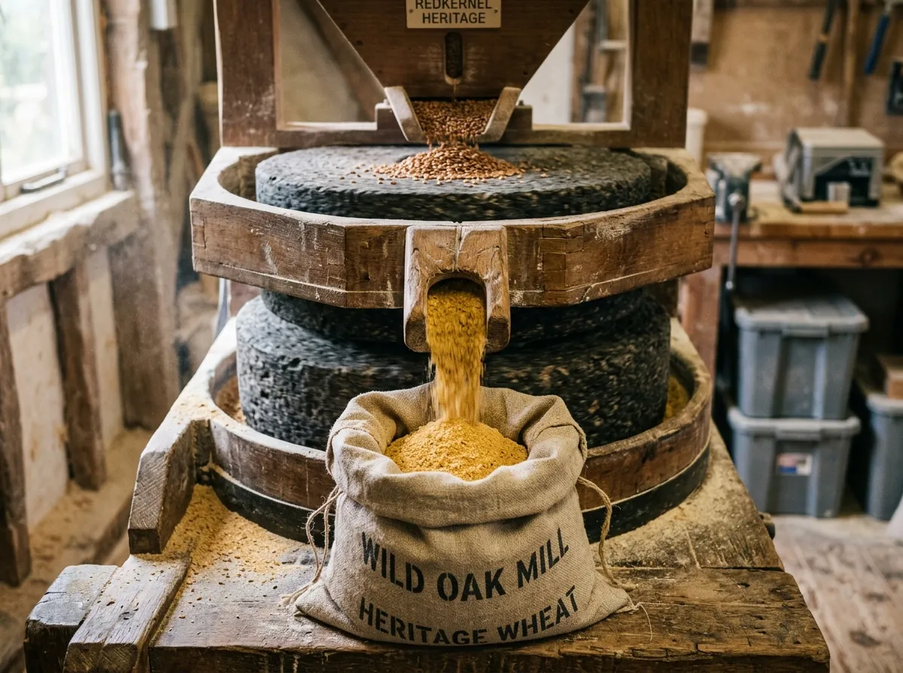
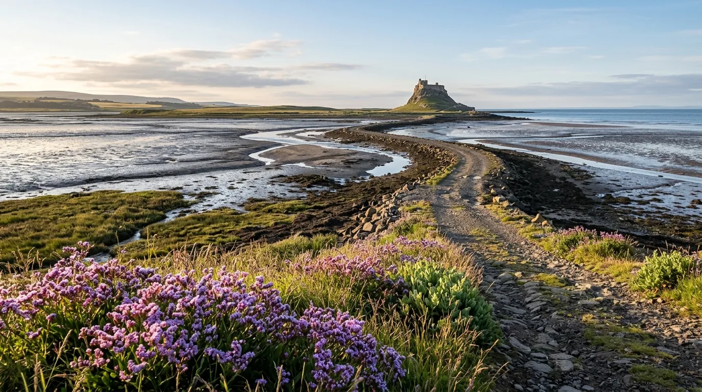
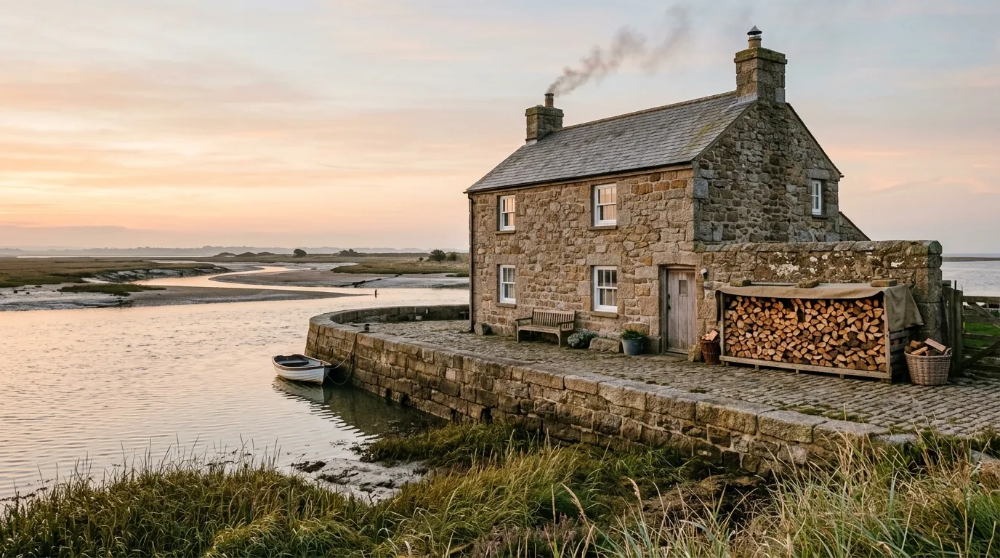

01. OSEA SEA-SALT BOULE
800 g round country loaf, 82% hydration, stoneground Maris Widgeon wheat, coarse Maldon mudflat salt, blistered crust.
£6.50
Stoneground English grains, wild estuarine yeast, and 48-hour slow fermentation inside an 1840 granite powder house on Osea Island.
GrainFold bakes naturally leavened country loaves and malt breads on Osea Island in the tidal Blackwater Estuary. We stone-mill heritage wheat varieties on site and ferment every batch slowly in rhythm with the North Sea tides that cut off our causeway twice daily. Our loaves are baked on the stone floor of a wood-fired Scotch oven burning local hornbeam, producing thick blistered crusts and an open, custardy crumb.
Osea Island is tied to the Essex mainland by a mile-long Roman gravel causeway known simply as The Hard. For eight hours out of every twelve, the high North Sea tide covers the track under four metres of dark coastal water, leaving our bakery completely isolated from delivery vans, industrial traffic, and supermarket distribution networks. That twice-daily isolation forces us to slow down, shaping our dough entirely by hand and listening to the crackle of burning hornbeam in the hearth.
We mill unhybridised English heritage wheats—principally Maris Widgeon and Red Lammas—on a small Austrian stone mill right beside our flour bins. Because we never sift out the germ or strip away the bran, our flours retain their natural oils, sweet grassy aromas, and deep amber colour. We mix each batch with sea-salt crystals evaporated from the Blackwater mudflats and a wild levain culture that has fed on the local sea-lavender air since our first firing.
Our loaves proof in spruce-pulp bannetons for forty-eight hours in the cool sea drafts of our granite storeroom before sliding into the oven at dawn. When the falling tide finally uncovers the causeway stones, our bakes are cooling on pine racks, ready for mainland visitors who walk or drive across the seabed to collect warm loaves straight from the peel.
Slow sourdough fermentation, unhybridised heritage flours, deep crust caramelisation.

800 g round country loaf, 82% hydration, stoneground Maris Widgeon wheat, coarse Maldon mudflat salt, blistered crust.
£6.50
1.2 kg dense hearth loaf, 100% wholemeal 18th-century Red Lammas wheat, 48-hour cold proof, rich nutty crumb.
£9.00
750 g tin loaf, sprouted organic rye grains, dark malted porter reduction, treacle undertones.
£7.50
Dimpled sharing slab, infused with foraged sea fennel, rosemary, and cold-pressed Suffolk oil.
£8.50Working with ancient agricultural varieties and low-impact coastal forestry.
Tall-straw wheats with deep root systems that pull rich minerals from East Anglian soils.
Utilizing the unheated granite powder house's damp saline drafts to slow yeast activity and develop deep lactic acidity.

Dense, clean-burning hardwood from local sustainable coppice that heats our Scotch oven stones to 240°C without imparting harsh resin soot.
"An absolute revelation. The crust has an almost glass-like shatter, yielding to a crumb that tastes genuinely of the coastal air."
"We build our entire Sunday service around GrainFold’s deliveries. The Red Lammas miche is the most digestibly complex bread in the county."
"A masterclass in restraint. They are proving that unhybridised grains, when treated with tidal patience, outperform any modern commodity flour."
An unforgettable pilgrimage across the seabed for warm bread.